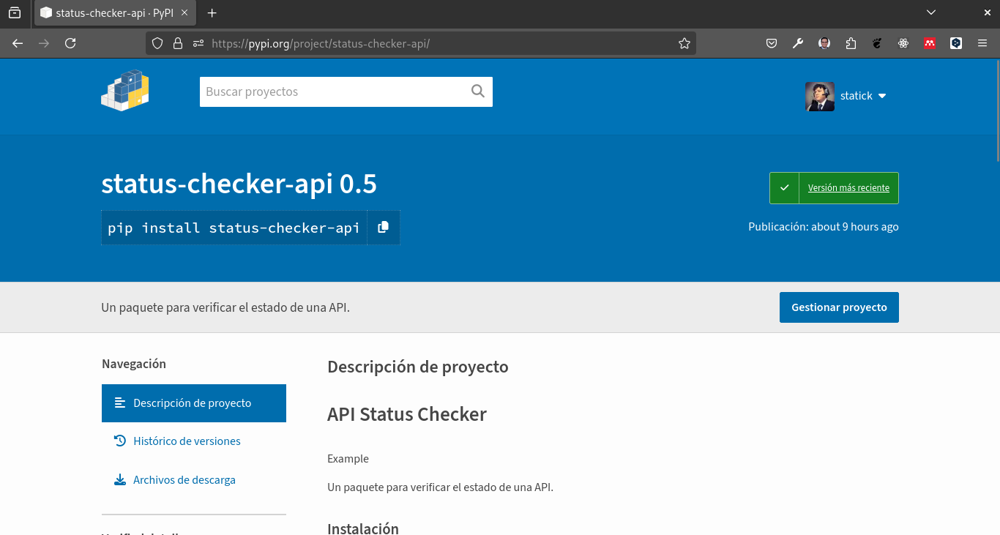
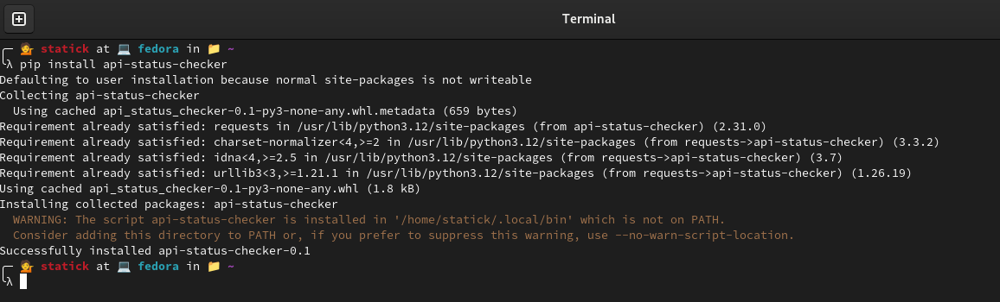
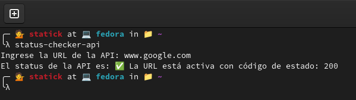

Públicar un paquete en Pypi

En este tutorial vamos a publicar un paquete llamado status-checker-api en Pypi.
Si has creado un paquete de Python y quieres compartirlo con otros desarrolladores, puedes publicarlo en Pypi.
Para ello vamos a crear un repositorio en GitHub y subir nuestro paquete, esta práctica es importante para poder compartir nuestro paquete con otros desarrolladores.
En el caso de este tutorial, el repositorio se encuentra en status_checker_api
Lo más importante es tener el o los scripts que contienen el código que queremos convertir a paquete.
Para ello vamos a empezar creando un directorio con el nombre de nuestro paquete, por ejemplo status_checker_api.
A continuación se visualiza la estructura de nuestro paquete.
├── dist
│ ├── status_checker_api-0.5-py3-none-any.whl
│ └── status_checker_api-0.5.tar.gz
├── img
│ └── paste-5.png
├── LICENSE
├── README.md
├── setup.py
└── src
├── status_checker_api
│ ├── __init__.py
│ ├── __main__.py
│ └── __pycache__
│ ├── __init__.cpython-312.pyc
│ └── __main__.cpython-312.pyc
├── status_checker_api.egg-info
│ ├── dependency_links.txt
│ ├── entry_points.txt
│ ├── PKG-INFO
│ ├── requires.txt
│ ├── SOURCES.txt
│ └── top_level.txt
└── tests
├── __init__.py
├── __pycache__
│ ├── __init__.cpython-312.pyc
│ └── test_status_checker_api.cpython-312-pytest-8.3.2.pyc
└── test_status_checker_api.pyDentro de este status_checker_api vamos a crear un directorio llamado src y dentro de este directorio vamos a crear un archivo llamado __init__.py, en este ejemplo tambien crearemos el archivo __main__.py.
Para poder publicar nuestro paquete en Pypi, necesitamos crear un archivo llamado setup.py en el directorio raíz de nuestro paquete. Este archivo contiene la información necesaria para empaquetar nuestro paquete y publicarlo en Pypi.
from setuptools import setup, find_packages
with open('README.md', 'r', encoding="utf-8") as fh:
long_description = fh.read()
setup(
name='status_checker_api',
version='0.5',
packages=find_packages(where='src'),
package_dir={'': 'src'},
install_requires=[
'requests',
],
entry_points={
'console_scripts': [
'status-checker-api=status_checker_api.__main__:main',
],
},
author='Diego Saavedra',
author_email='dsaavedra88@gmail.com',
description='Un paquete para verificar el estado de una API.',
long_description=long_description,
long_description_content_type='text/markdown',
url='https://github.com/statick88/status_checker_api',
classifiers=[
'Programming Language :: Python :: 3',
'License :: OSI Approved :: MIT License',
'Operating System :: OS Independent',
],
options={
'egg_info': {
'egg_base': 'src'
}
},
python_requires='>=3.12',
)Creación del archivo README.md
# status_checker_api
Un paquete para verificar el estado de una API.
## Instalación
pip install status_checker_api
## Uso
api-status-checker
Ingrese la URL de la API: https://www.google.com
El status de la API es: 200
## Licencia
MIT License
## Autor
Diego SaavedraEl código del paquete se encuentra en el directorio src. Para poder ejecutar el paquete, necesitamos un archivo llamado __init__.py en el directorio status_checker_api.
import requests
from urllib.parse import urlparse
def check_status(url):
# Asegúrate de que la URL tenga un esquema (http o https)
parsed_url = urlparse(url)
if not parsed_url.scheme:
url = 'https://' + url
try:
response = requests.get(url)
return f"La URL está activa con código de estado: {response.status_code}" # Devuelve el mensaje con el código de estado
except requests.exceptions.RequestException as e:
return f"Error: {e}" # Devuelve el mensaje de error con una xAnalizando el código anterior, podemos ver que el paquete status_checker_api contiene una función llamada check_status que verifica el estado de una API. La función toma una URL como argumento y devuelve un mensaje con el estado de la API.
Creación del archivo __main__.py
from status_checker_api import check_status
def main():
url = input('Ingrese la URL de la API: ')
status = check_status(url)
print(f'El status de la API es: {status}')
if __name__ == "__main__":
main()El archivo __main__.py contiene el código principal del paquete. Este archivo importa la función check_status del paquete status_checker_api y la utiliza para verificar el estado de una API.
Creación del archivo LICENSE
MIT License
Copyright (c) 2024 Diego Saavedra
Permission is hereby granted, free of charge, to any person obtaining a copy
of this software and associated documentation files (the "Software"), to deal
in the Software without restriction, including without limitation the rights
to use, copy, modify, merge, publish, distribute, sublicense, and/or sell
copies of the Software, and to permit persons to whom the Software is
furnished to do so, subject to the following conditions:
The above copyright notice and this permission notice shall be included in all
copies or substantial portions of the Software.El archivo LICENSE contiene la licencia del paquete. En este caso, utilizamos la licencia MIT.
Creación del archivo .gitignore
# Byte-compiled / optimized / DLL files
__pycache__/
*.py[cod]
*$py.class
# C extensions
*.so
# Distribution / packaging
dist/
build/
*.egg-info/
*.egg
# Virtual environments
venv/
env/
ENV/
# IDEs / Editors
.idea/
.vscode/
*.sublime-project
*.sublime-workspace
# Miscellaneous
*.swp
.DS_StoreEl archivo .gitignore contiene los archivos y directorios que no queremos incluir en nuestro repositorio de Git. En este caso, ignoramos los archivos y directorios generados por Python y los entornos virtuales.
Creación de la cuenta en Pypi
Para poder publicar nuestro paquete en Pypi, necesitamos crear una cuenta en Pypi.
Una vez creada la cuenta en Pypi, necesitamos verificarla a través de un correo electrónico que nos enviarán. Adicional a ello es necesario configurar un factor de doble autenticación. Esto es indispensable para poder crear un token de acceso. El mismo que nos permitirá subir nuestro paquete a Pypi.
Una vez que hayamos creado la cuenta, necesitamos crear un archivo llamado .pypirc en nuestro directorio de usuario con la siguiente información:
[pypi]
username = statick
password = pypi-tokenEn el archivo .pypirc, reemplazamos username con nuestro nombre de usuario de Pypi y password con nuestro token de acceso de Pypi.
En sistemas operativos basados en Unix, el archivo .pypirc se encuentra en el directorio de usuario .pypirc.
En sistemas operativos basados en Windows, el archivo .pypirc se encuentra en el directorio de usuario C: / Users / username / –> en este directorio se almacena el archivo .pypirc.
Publicar el paquete en Pypi
Para publicar nuestro paquete en Pypi, necesitamos instalar el paquete twine.
Twine es una herramienta que nos permite subir paquetes de Python a Pypi.
pip install twineEs recomandable que tengamos la última versión de twine.
pip install --upgrade twineUna vez que hayamos instalado y actualizado twine, podemos publicar nuestro paquete en Pypi de la siguiente manera:
python -m pip install --upgrade buildEl comando anterior instala el paquete build que necesitamos para construir nuestro paquete.
python -m buildEl comando anterior crea un archivo dist en el directorio raíz de nuestro paquete. Este archivo contiene el paquete que vamos a publicar en Pypi. Es decir los archivos .tar.gz y .whl.
Estos archivos son los que vamos a subir a Pypi.
python -m twine upload --repository pypi dist/* --verboseEl comando anterior sube nuestro paquete a Pypi. El archivo .pypirc contiene la información de autenticación que necesitamos para subir nuestro paquete.
¡Y eso es todo! Ahora puedes compartir tu paquete de Python con otros desarrolladores en Pypi. En el caso de este paquete la url es status_checker_api.
Instalar el paquete
Para instalar el paquete que acabamos de publicar en Pypi, necesitamos usar pip.

pip install status_checker_apiUna vez que hayamos instalado el paquete, podemos utilizarlo en nuestro código de Python.
Uso del paquete
api-status-checker
Es necesario ingresar la URL de la API que queremos verificar.
Ingrese la URL de la API: https://www.google.com
El status de la API es: 200
¡Y eso es todo! Ahora puedes actualizar tu paquete de Python en Pypi.
No olvides cambiar la versión de tu paquete en el archivo setup.py antes de subirlo a Pypi si realizas alguna actualización.
Si decidimos actualizar el paquete en Pypi, necesitamos seguir los mismos pasos que hemos visto en este tutorial.
Sin embargo solo necesitaremos 2 comandos:
python -m buildpython -m twine upload --repository pypi dist/* --verboseEn el directorio dist se generan los archivos .tar.gz y .whl que son los que vamos a subir a Pypi. Es necesario eliminar los archivos anteriores antes de subir los nuevos en este directorio, mi recomendación es eliminar el directorio dist y volver a ejecutar el comando python -m build.
Conclusión
En este tutorial aprendimos cómo publicar un paquete de Python en Pypi. Pudimos ver cómo crear un paquete de Python, subirlo a Pypi y compartirlo con otros desarrolladores.